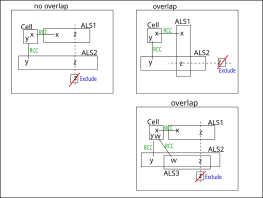
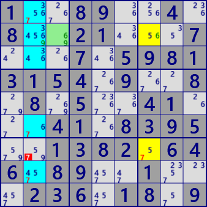
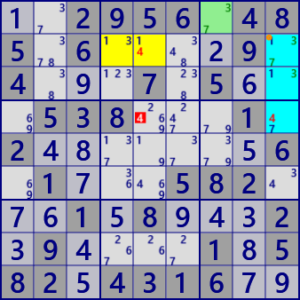

ALS DeathBlossom(基本形)
ALS Death Blossom(発展形)DeathBlossom...アルゴリズム考察(v5)
DeathBlossomは、妖しげな名前をもつ ALSの配置に基づく解析アルゴリズムです。
DeathBlossomのイメージを示します。
1つのセル(軸セル:StemCell)がn個の候補数字（x,y,w)を持ち、そのそれぞれの数字がn個のALSと強いリンク(セルとALS間のRCC)で繋がっているとします。
また、n個のALSにはRCCとは異なる共通の数字zがあるとします。このとき、ALS内の全てのzをカバーするzがALS外にあれば、ALS外のzは除外できます。
ALS外の数字zが真とすると、全てのALSはLockedSetになり、軸セルの候補数字がなくなるからです。
ALSは重なりなしの場合(左図)と、重なりを許容する場合(右上下)があります。

ALS DeathBlossomの例です。

ALS Death BlossomStem : r2c3 #69
-#6-ALS1 : r27c7 #567
-#9-ALS2 : r12368c2 #345679
eliminated : r7c2 #7

ALS Death Blossom [overlap]Stem : r1c7 #37
-#7-ALS1 : r2c459 #1347
-#3-ALS2 : r234c9 #1347
eliminated : r4c5 #4
...8...4....21...7...7.5981315..9..8.8....4....41.83.5..1.82.646.8...1...236.18..
..2956.485.6....9.4...7.5...538...1.2.......6.1...582...1.8...2.9....1.582.4316..